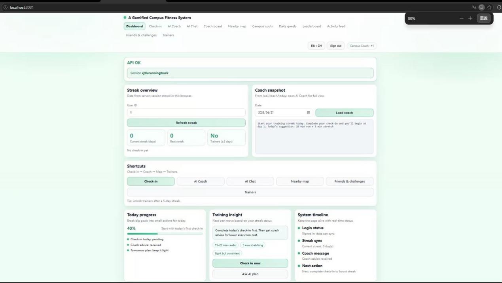
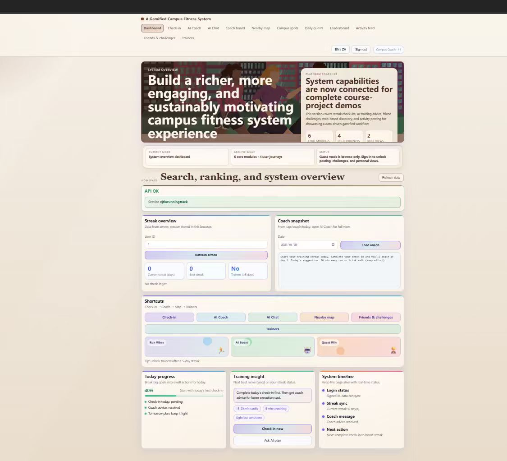

Clear check-in process
The check-in process was straightforward and the streak data was clear. However, early visual design lacked engagement.
The evaluation stage uses real user feedback to identify usability problems, improve the interface and reflect on the social and ethical meaning of AI-supported campus fitness.
Three users tested the system and provided feedback on check-in clarity, workflow smoothness, leaderboard motivation and AI recommendation usefulness.
The check-in process was straightforward and the streak data was clear. However, early visual design lacked engagement.
The overall workflow was smooth with no unnecessary steps. The leaderboard helped motivate comparison and participation.
Personalized fitness recommendations were useful, but gamification elements needed stronger achievement feedback.
User feedback showed that visual engagement, feature discoverability, motivational rewards and social flow simplicity were the most important improvement directions.
Early pages lacked engagement and did not fully match a gamified fitness experience.
Important functions were not always discoverable, affecting usability and task completion.
Completing tasks did not create a strong enough sense of reward or progress.
Some social interactions required too many steps and needed simplification.
Based on user testing, the system improved feature visibility, visual appeal, reward feedback and interaction efficiency.
| Problem | Change | Result |
|---|---|---|
| AI coach entry was difficult to locate | Moved AI coach to the homepage | Improved feature visibility and accessibility |
| Visual design was too plain | Enhanced color scheme and visual hierarchy | Increased user engagement and visual appeal |
| Weak sense of achievement after task completion | Added pop-up feedback and reward indicators | Strengthened motivation and user satisfaction |
| Social interaction steps were complex | Simplified interaction flow and reduced transitions | Improved usability and efficiency |
The project responds to the goal of promoting a healthier campus environment and improving college students’ physical well-being. By combining lightweight interaction design with gamification, the system encourages long-term exercise habits in a more engaging and sustainable way.
From the perspective of AI application, the AI coach provides personalized fitness recommendations and interactive guidance. This helps address the lack of accessible professional coaching resources on campus and improves the efficiency of delivering tailored exercise advice.
The project also considers data privacy and ethical responsibility. The system follows minimal data collection and informed consent principles, while anonymization techniques reduce privacy leakage risks.
Limitations remain, including the small evaluation sample, potential over-reliance on AI recommendations, algorithmic bias and limited personalization depth. Future work should involve larger-scale testing and improve recommendation safety and inclusiveness.



The project highlights the importance of balancing technological innovation with ethical responsibility and human-centered design.